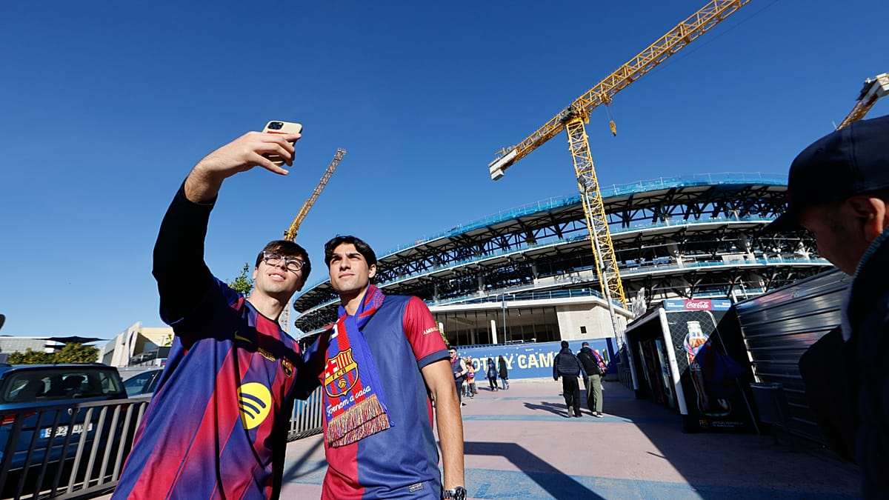

Príbeh nášho fanklubu
Všetko to začalo partiou priateľov a jednou obrovskou vášňou.
Naša organizácia vznikla v roku 2010 s cieľom spojiť všetkých slovenských fanúšikov FC Barcelona pod jednu strechu. Chceli sme vytvoriiť priestor, kde by sme spoločne mohli prežívať radosť z víťazstiev, ale aj smútok z prehier.
Od nášho založenia sme zorganizovali desiatky spoločných zájazdov priamo do metropoly Katalánska. Štadión Camp Nou sa stal naším druhým domovom. Počas sezóny organizujeme spoločné sledovania zápasov v rôznych mestách na Slovensku.
Sme hrdí na to, že sme oficiálne uznaní materským klubom FC Barcelona ako Penya (oficiálny fanklub). Toto ocenenie nás zaväzuje šíriť dobré meno klubu a jeho hodnoty – rešpekt, úsilie, ambície, tímovú prácu a pokoru.

Zaujímavosti o klube
Motto FC Barcelona znie "Més que un club", čo v preklade znamená "Viac ako klub". Symbolizuje to silné spojenie klubu s katalánskou identitou a kultúrou.
Klub bol založený 29. novembra 1899 Joanom Gamperom, švajčiarskym priekopníkom futbalu. Odvtedy sa stal jedným z najúspešnejších klubov na svete.
La Masia je slávna mládežnícka akadémia FC Barcelona. Vychovala legendy ako Lionel Messi, Xavi Hernández, Andrés Iniesta, Carles Puyol a mnohých ďalších.
Zápas medzi FC Barcelona a Realom Madrid sa nazýva El Clásico. Ide o jeden z najsledovanejších a najprestížnejších športových zápasov na planéte.